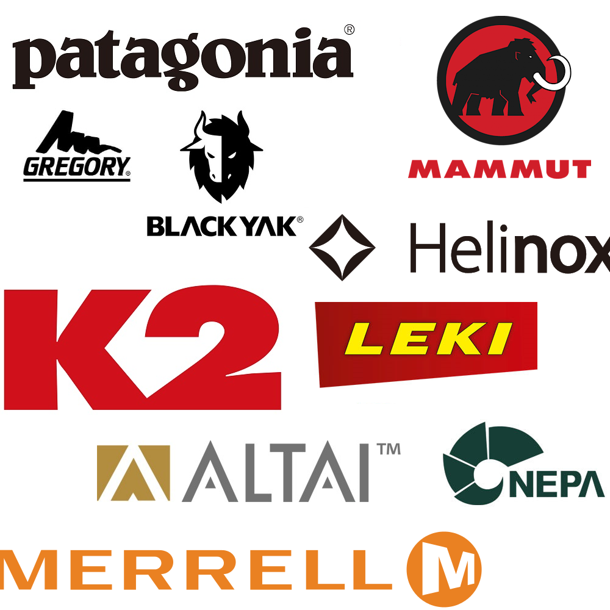

OUTDOOR

아웃도어는 문 밖에서 일어나는 모든 것을 지칭하는 의미로 패션 브랜드 업계에서는 야외 활동에 연관된 상품군들이다.
특히 등산, 낚시, 캠핑 활동에 관련된 상품들이 많으며 대표적으로는 등산의 색깔이 짙다.
야외 레져 활동에 관한 상품들이기에 상품의 기능성과, 브랜드가 어떤 분야에 더 전문적인지를 파악하여 구매하는 것이 중요하다.
merrell로 예를 들면, 해당브랜드는 아웃도어용 신발이 독보적이다. 등산 활동에 적합한 기능성을 신발에 적용하였고
그 부분을 소비자들에게 인정받아 아웃도어 신발 부문 13년 연속 세계판매 1위라는 타이틀이 있는 브랜드이다.
앞서 언급한 바와 같이 브랜드마다 카테고리별로 기술력, 기능성, 인지도 등이 다르기 때문에 여러분들이 필요한 상품군(의류, 신발, 용품)은
어느 브랜드가 상품성이 좋은지 판단하여 구매하는 것이 좋다.